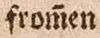

Level 2
Abbreviation lines, which appear as bars or wavy lines above letters and as substituents for omitted characters, are generally regarded as a combination of two characters. A character combination is formed from the grapheme and the superimposed tilde. For this the Unicode U+0303, COMBINING TILDE is used.
| Original | Transcription |
|---|---|
|  | from̃en |
 |
Uñ macht |